NOVEL NOTES.
BY JEROME K. JEROME.
ILLUSTRATIONS BY J. GÜLICH AND J. GREIG,
PART X.
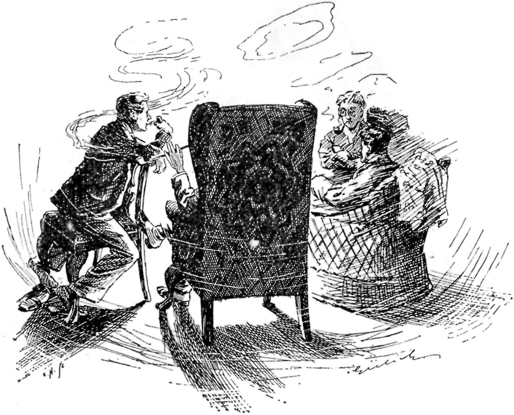
"DISCUSSION AT OUR LAST MEETING."
{kind=link}
The final question discussed at our last meeting had been: What shall our hero be? MacShaugnassy had suggested an author, with a critic for the villain. Brown's fancy was an artist. My idea was a stockbroker, with an undercurrent of romance in his nature. Said Jephson, who has a practical mind, approaching at times the commercial: "The question is not what we like, but what the female novel-reader likes."
"That is so," agreed MacShaugnassy. "I propose that we collect feminine opinion upon this point. I will write to my aunt, and get from her the old lady's view. You," he said, turning to me, "can put the case to your wife, and get the young lady's ideal. Let Brown write to his sister at Newnham, and find out whom the intellectual maiden favours, while Jephson can learn from Miss Medbury what is most attractive to the common-sensed girl."
This plan we had adopted, and the result was now under consideration. MacShaugnassy opened the proceedings by reading his aunt's letter. Wrote the old lady:
"I think, if I were you, my dear boy, I should choose a soldier. You know your poor grandfather, who ran away to America with that wicked Mrs. Featherly, the banker's wife, was a soldier, and so was your poor cousin Robert, who lost eight thousand pounds at Monte Carlo. I have always felt singularly drawn towards soldiers, even as a girl; though your poor dear uncle could not bear them. You will find many allusions to soldiers and men of war in the Old Testament (see Jer. 48,14). Of course one does not like to think of their fighting and killing each other, but then they do not seem to do much of that sort of thing nowadays."
"So much for the old lady," said MacShaugnassy, as he folded up the letter and returned it to his pocket. "What says culture?"
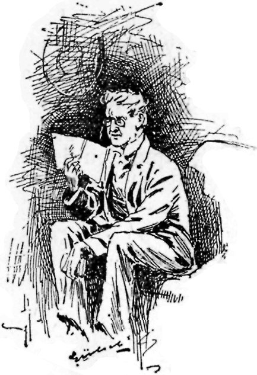
BROWN READ AS FOLLOWS.
{kind=link}
Brown produced from his cigar-case a letter addressed in a bold round hand, and read as follows:
"What a curious coincidence! A few of us were discussing this very subject last night in Millicent Hightopper's rooms, and I may tell you at once that our decision was unanimous in favour of soldiers. You see, my dear Selkirk, in human nature the attraction is towards the opposite. To a milliner's apprentice a poet would no doubt be satisfying; to a woman of intelligence he would be an unutterable bore. The man of brain is not for the woman of brain. What the intellectual woman requires in man is not something to argue with, but something to look at. To an empty-headed woman I can imagine the soldier type proving vapid and uninteresting; to the woman of mind he represents her ideal of man—a creature strong, handsome, well-dressed, and not too clever."
"That gives us two votes for the army," remarked MacShaugnassy, as Brown tore his sister's letter in two, and threw the pieces into the waste-paper basket. "What says the common-sensed girl?"
"First catch your common-sensed girl," muttered Jephson, a little grumpily, as it seemed to me. "Where do you propose finding her?"
"Well," returned MacShaugnassy, "I looked to find her in Miss Medbury."
As a rule, the mention of Miss Medbury's name brings a flush of joy to Jephson's face; but now his features wore an expression distinctly approaching a scowl.
"Oh!" he replied, "did you? Well, then, the common-sensed girl loves the military, also."
"By Jove!" exclaimed MacShaugnassy, "what an extraordinary thing. What reason does she give?"
"That they look so nice when they're dressed, and that they dance so divinely," answered Jephson, shortly.
"Well, you do surprise me," murmured MacShaugnassy, "I am astonished."
Then to me he said: "And what does the young married woman say? The same?"
"Yes," I replied, "precisely the same."
"Does she give a reason?" he asked.
"Oh, yes," I explained; "because you can't help liking them."
There was silence for the next few minutes, while we smoked and thought. I fancy we were all wishing we had never started this enquiry.
That four distinctly different types of educated womanhood should, with promptness and unanimity quite unfeminine, have selected the soldier as their ideal, was certainly discouraging to the civilian heart. Had they been nursemaids or servant girls, I should have expected it. The worship of Mars by the Venus of the white cap is one of the few vital religions left to this devoutless age. A year or two ago I lodged near a barracks, and the sight to be seen round its huge iron gates on Sunday afternoons I shall never forget. The girls began to assemble about twelve o'clock. By two, at which hour the army, with its hair nicely oiled and a cane in its hand, was ready for a stroll, there would be some four or five hundred of them waiting in a line. Formerly they had collected in a wild mob, and as the soldiers were let out to them two at a time, had fought for them, as lions for early Christians. This, however, had led to scenes of such disorder and brutality, that the police had been obliged to interfere; and the girls were now marshalled in queue, two abreast, and compelled, by a force of constables specially told off for the purpose, to keep their places and wait their proper turn.
At three o'clock the sentry on duty would come down to the wicket and close it. "They're all gone, my dears," he would shout out to the girls still left; "it's no good your stopping, we've no more for you to-day."
"Oh, not one!" some poor child would murmur pleadingly, while the tears welled up into her big round eyes, "not even a little one. I've been waiting such a long time."
"Can't help that," the honest fellow would reply, gruffly, but not unkindly, turning aside to hide his emotion; "you've had 'em all between you. We don't make 'em, you know: you can't have 'em if we haven't got 'em, can you? Come earlier next time."
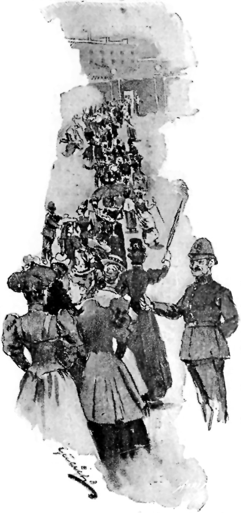
"NOW THEN, PASS ALONG."
{kind=link}
Then he would hurry away to escape further importunity; and the police, who appeared to have been waiting for this moment with gloating anticipation, would jeeringly hustle away the weeping remnant. "Now then, pass along, you girls, pass along," they would say, in that irritatingly unsympathetic voice of theirs. "You've had your chance. Can't have the roadway blocked up all the afternoon with this 'ere demonstration of the unloved. You'll have to put up with your ordinary young men for to-day. Pass along."
In connection with this same barracks, our charwoman told Amenda, who told Ethelbertha, who told me a story, which I now told the boys.
Into a certain house, in a certain street in the neighbourhood, there moved one day a certain family. Their servant had left them—most of their servants did at the end of a week—and the day after the moving-in an advertisement was drawn up and sent to the Chronicle for a domestic. It ran thus:
WANTED GENERAL SERVANT, in small family of eleven. Wages, £6; no beer money. Must be early riser and hard worker. Washing done at home. Must be good cook, and not object to window-cleaning. Unitarian preferred.—Apply, with references, to A. B., &C.
That advertisement was sent off on Wednesday afternoon. At seven o'clock on Thursday morning the whole family were awakened by continuous ringing of the street door bell. The husband, looking out of window, was surprised to see a crowd of about fifty girls surrounding the house. He slipped on his dressing-gown and went down to see what was the matter. The moment he opened the door, fifteen of them charged tumultuously into the passage, sweeping him completely off his legs. Once inside, these fifteen faced round, fought the other thirty-five or so back on to the door-step, and slammed the door in their faces. Then they picked up the master of the house, and asked him politely to conduct them to "A. B."
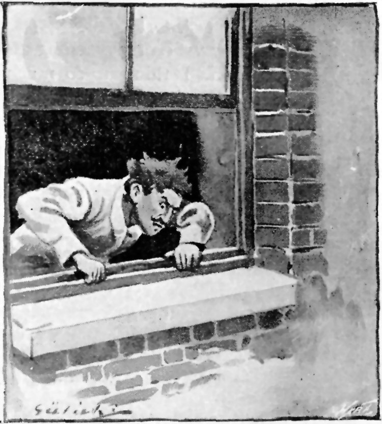
"SURPRISED TO SEE ABOUT FIFTY GIRLS."
{kind=link}
At first, owing to the clamour of the mob outside, who were hammering at the door and shouting curses through the keyhole on those inside, he was too confused to understand anything, but by dint of great exertion they succeeded at length in explaining to him that they were domestic servants come in answer to his wife's advertisement. The man went and told his wife, and his wife said she would see them, one at a time.
Which one should have audience first was a delicate question to decide. The man, on being appealed to, said he would prefer to leave it to them. They accordingly discussed the matter among themselves. At the end of a quarter of an hour, the victor, having borrowed a packet of pins and a looking-glass from our charwoman, who had slept in the house, went upstairs, while the remaining fourteen sat down in the hall, and fanned themselves with their bonnets.
"A. B." was a good deal astonished when the first applicant presented herself. She was a tall, genteel-looking, well-dressed girl. Up to yesterday she had been head housemaid at Lady Stanton's, and before that she had been under-cook for two years to the Duchess of York.
"And why did you leave Lady Stanton?" asked "A. B."
"To come here, mum," replied the girl.
The lady was puzzled.
"And you'll be satisfied with six pounds a year?" she asked.
"Certainly, mum, I think it ample."
"And you don't mind hard work?"
"I love it, mum."
"And you're an early riser?"
"Oh yes, mum, it upsets me stopping in bed after half-past five."
"You know we do the washing at home?"
"Yes, mum. I think it so much better to do it at home. Those laundries ruin good clothes. They're so careless."
"Are you a Unitarian?" continued the lady.
"Not yet, mum," replied the girl, "but I should like to be one."
The lady took her reference, and said she would write her.
"I do hope you will give me a trial, mum," pleaded the girl, as she rose to go; "I would try so hard to give you satisfaction."
The next applicant offered to come for three pounds—thought six pounds too much. She also expressed her willingness to sleep in the back kitchen: a shakedown under the sink was all she wanted. She likewise had yearnings towards Unitarianism.
The third girl did not require any wages at all—could not understand what servants wanted with wages—thought wages only encouraged a love of foolish finery—thought a comfortable home in a Unitarian family ought to be sufficient wages for any girl.
This girl said there was one stipulation she should like to make, and that was that she should be allowed to pay for all breakages caused by her own carelessness or neglect. She objected to holidays and evenings out on principle; she held that they distracted a girl from her work.
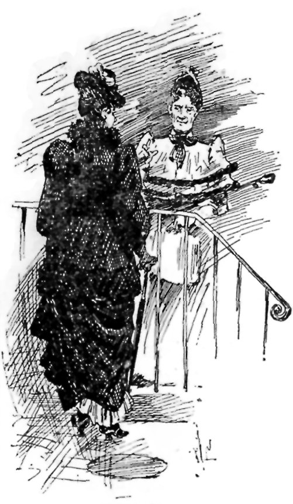
"MET THE NEXT DOOR LADY ON THE DOOR-STEP."
{kind=link}
The fourth candidate offered a premium of five pounds for the place; and then "A.B." began to get frightened, and refused to see any more of the girls, convinced that they must be lunatics from some neighbouring asylum out for a walk.
Later in the day, meeting the next door lady on the door-step, she related her morning's experiences.
"Oh, that's nothing extraordinary," said the next door lady; "none of us on this side of the street pay wages; and we get the pick of all the best servants in London. Why, girls will come from the other end of the kingdom to get into one of these houses. It's the dream of their lives. They save up for years, so as to be able to come here for nothing."
"What's the attraction?" asked "A. B.," more amazed than ever.
"Why, don't you see," explained the next door lady, "our back windows open upon the barrack yard. A girl living in one of these houses is always close to soldiers. By looking out of window she can always see soldiers; and sometimes a soldier will nod to her, or even call up to her. They never dream of asking for wages. They'll work eighteen hours a day, and put up with anything just to be allowed to stop."
"A.B." profited by this information, and engaged the girl who offered the five pounds premium. She found her a perfect treasure of a servant. She was invariably willing and respectful, slept on a sofa in the kitchen, and was always contented with an egg for her dinner.
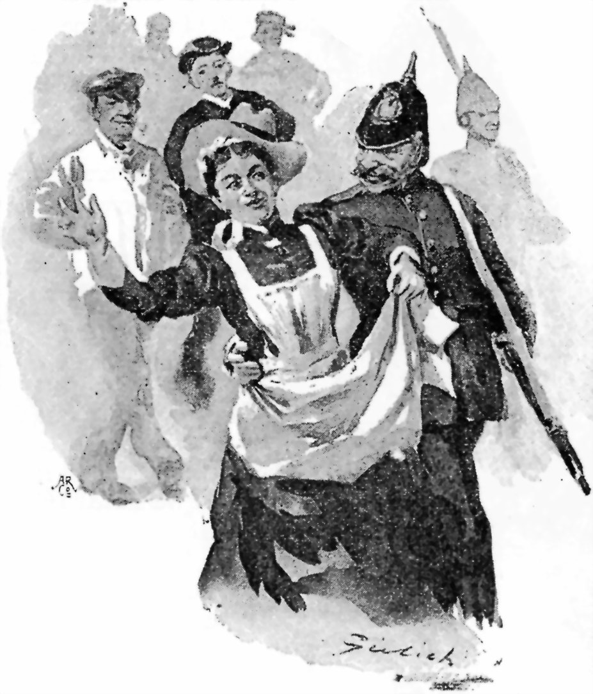
"A SOLDIER'S ARM ROUND THE WAIST."
{kind=link}
The truth of this story I cannot vouch for. Myself, I can believe it. Brown and MacShaugnassy made no attempt to do so, which seemed unfriendly. Jephson excused himself on the plea of a headache. I admit there are points in it presenting difficulties to the average intellect. As I explained at the commencement, it was told to me by Ethelbertha, who had it from Amenda, who got it from the charwoman, and exaggerations may have crept into it. The following, however, were incidents that came under my own personal observation. They afforded a still stronger example of the influence exercised by Tommy Atkins upon the British domestic, and I therefore thought it right to relate them also to the boys.
"The heroine of them," I said, "is our Amenda. Now, you would call her a tolerably well-behaved, orderly young woman, would you not?"
"She is my ideal of unostentatious respectability," answered MacShaugnassy.
"That was my opinion also," I replied. "You can, therefore, imagine my feelings on passing her one evening in the Folkestone High Street with a Panama hat upon her head (my Panama hat), and a soldier's arm round her waist. She was one of a mob, composed of all the unoccupied riff-raff of Folkestone, who were following the band of the Third Berkshire Infantry, then in camp at Sandgate. There was an ecstatic, far-away look in her eyes. She was dancing rather than walking, and with her left hand she beat time to the music."
"I should say you were suffering from a mild attack of D.T. when you saw all that," said MacShaugnassy.
"So I might have thought myself," I said; "but Ethelbertha was with me at the time, and she saw it too. We stared after the procession until it had turned the corner, and then we stared at each other.
"'Oh, it's impossible,' said Ethelbertha to me.
"'But that was my hat,' I said to Ethelbertha.
"The moment we reached home Ethelbertha looked for Amenda, and I looked for my hat. Neither were to be found.
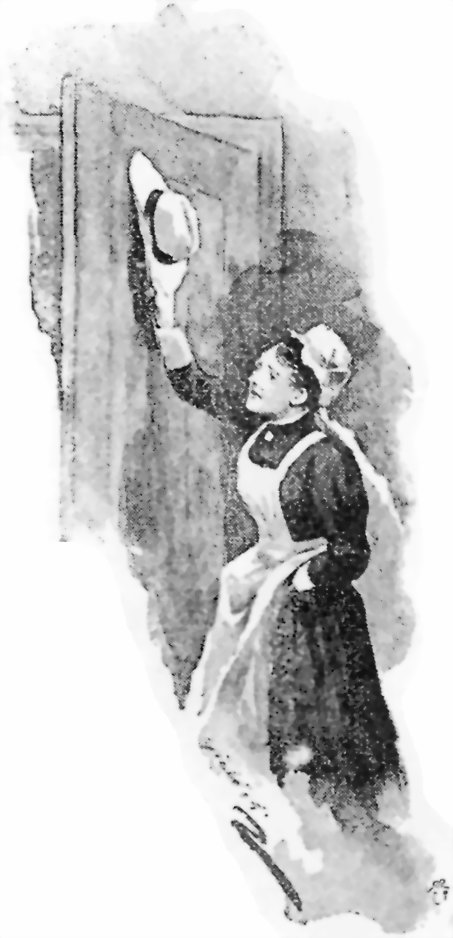
"AND HUNG MY HAT UP."
{kind=link}
"Nine o'clock struck, ten o'clock struck. At half-past ten, we went down and got our own supper, and had it in the kitchen. At a quarter-past eleven, Amenda returned. She walked into the kitchen without a word, hung my hat up behind the door, and commenced clearing away the supper things.
"Ethelbertha rose, calm but severe.
"'Where have you been, Amenda?' she enquired.
"'Gadding half over the county with a lot of low soldiers,' answered Amenda, continuing her work.
"'You had on my hat,' I added, somewhat gloomily. It was not the right view to take of the case, I know, but, personally, that fact grieved me more than all the other incidents in the proceeding put together, sad though I felt these to be. It was an expensive hat, and Ethelbertha said it suited me (there are not many that do). After seeing it that night on Amenda's head, my pride in it was gone.
"'Yes, sir,' replied Amenda, still continuing her work, 'it was the first thing that came to hand. What I'm thankful for is that it wasn't missis's best bonnet.'
"Whether Ethelbertha was mollified by the proper spirit displayed in this last remark, I cannot say, but I think it probable. At all events, it was in a voice more of sorrow than of anger that she resumed her examination.
"'You were walking with a soldier's arm around your waist when we passed you, Amenda?' she observed interrogatively.
"'I know, mum,' admitted Amenda, 'I found it there myself when the music stopped.'
"Ethelbertha looked her enquiries. Amenda filled a saucepan with water, and then replied to them.
"'I'm a disgrace to a decent household,' she said; 'no mistress who respected herself would keep me a moment. I ought to be put out on the doorstep with my box and a month's wages.'
"'But why did you do it then?' said Ethelbertha, with natural astonishment.
"'Because I'm a helpless ninny, mum.' There was no trace of bitterness or passion in Amenda's tones. She spoke in the calm, even voice of a person stating facts.
"'I can't help myself,' she went on; 'if I see soldiers I'm bound to follow them. It runs in our family. My poor cousin Emma was just such another fool. She was engaged to be married to a quiet, respectable young fellow with a shop of his own, and three days before the wedding she ran off with a regiment of marines and married the colour-sergeant. That's what I shall end by doing. I've been all the way to Sandgate with that lot you saw me with, and I've kissed four of them—the nasty wretches. I'm a nice sort of girl to be walking out with a respectable milkman.'
"She was so deeply disgusted with herself that it seemed superfluous for anybody else to be indignant with her; and Ethelbertha changed her tone and tried to comfort her.
"'Oh, you'll get over all that nonsense, Amenda,' she said, laughingly; 'you see yourself how silly it is. You must tell Mr. Bowles to keep you away from soldiers.'
"'Ah, I can't look at it in the same light way that you do, mum,' returned Amenda, somewhat reprovingly; 'a girl that can't see a bit of red marching down the street without wanting to rush out and follow it ain't fit to be anybody's wife. Why I should be leaving the shop with nobody in it about twice a week, and he'd have to go the round of all the barracks in London, looking for me. I shall save up and get myself into a lunatic asylum, that's what I shall do.'
"Ethelbertha began to grow quite troubled. 'But surely this is something altogether new, Amenda,' she said; 'you must have often met soldiers when you've been out in London?'
"'Oh, yes, one or two at a time, walking about anyhow, I can stand that all right. It's when there's a lot of them all together with a band that I lose my head.'
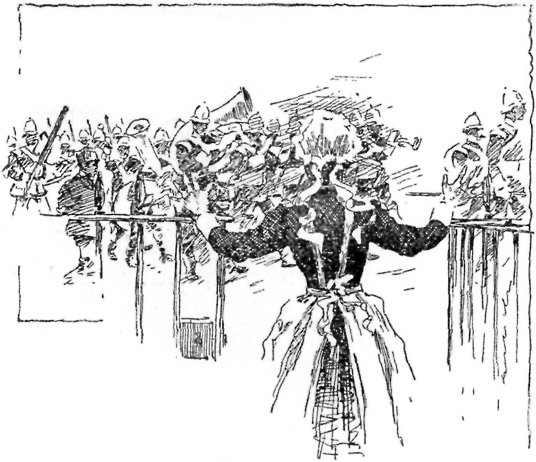
"'WHEN THERE'S A LOT OF THEM WITH A BAND, I LOSE MY HEAD.'"
{kind=link}
"'You don't know what it's like, mum,' she added, noticing Ethelbertha's puzzled expression; 'you've never had it. I only hope you never may.'
"We kept a careful watch over Amenda during the remainder of our stay at Folkestone, and an anxious time we had of it. Every day some regiment or other would march through the town, and at the first sound of its music Amenda would become restless and excited. The Pied Piper's reed could not have stirred the Hamelin children deeper than did those Sandgate bands the heart of our domestic. Fortunately, they generally passed early in the morning when we were indoors, but one day, returning home to lunch, we heard distant strains dying away upon the Hythe Road. We hurried in. Ethelbertha ran down into the kitchen; it was empty!—up into Amenda's bedroom; it was vacant! We called. There was no answer.
"'That miserable girl has gone off again,' said Ethelbertha. 'What a terrible misfortune it is for her. It's quite a disease.'
"Ethelbertha wanted me to go to Sandgate camp and enquire for her. I was sorry for the girl myself, but the picture of a young and innocent-looking man wandering about a complicated camp, enquiring for a lost domestic, presenting itself to my mind, I said that I'd rather not.
"Ethelbertha thought me heartless, and said that if I would not go she would go herself. I replied that I thought one female member of my household was enough in that camp at a time, and requested her not to. Ethelbertha expressed her sense of my inhuman behaviour by haughtily declining to eat any lunch, and I expressed my sense of her unreasonableness by sweeping the whole meal into the grate, after which Ethelbertha suddenly developed exuberant affection for the cat (who didn't want anybody's love, but wanted to get under the grate after the lunch), and I became supernaturally absorbed in the day-before-yesterday's newspaper.
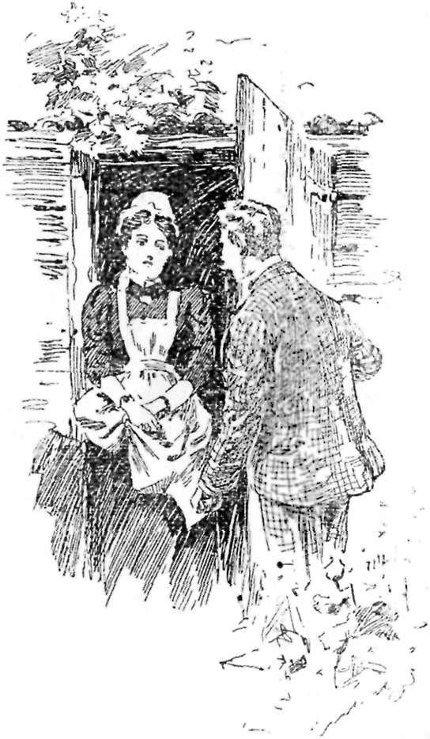
"'WHO LOCKED YOU IN THERE?'"
{kind=link}
"In the afternoon, strolling out into the garden, I heard the faint cry of a female in distress. I listened attentively, and the cry was repeated. I thought it sounded like Amenda's voice, but where it came from I could not conceive. It drew nearer, however, as I approached the bottom of the garden, and at last I located it in a small wooden shed, used by the proprietor of the house as a dark room for developing photographs.
"The door was locked. 'Is that you, Amenda?' I cried through the keyhole.
"'Yes, sir,' came back the muffled answer. 'Will you please let me out; you'll find the key on the ground near the door.'
"I discovered it on the grass about a yard away, and released her. 'Who locked you in there?' I asked.
"'I did, sir,' she replied; 'I locked myself in, and pushed the key out under the door. I had to do it, or I should have gone off with those beastly soldiers.'
"'I hope I haven't inconvenienced you, sir,' she added, stepping out; 'I left the lunch all laid.'"
Amenda's passion for soldiers was her one tribute to sentiment. Towards all others of the male sex she maintained an attitude of callous unsusceptibility, and her engagements with them (which were numerous) were entered into or abandoned on grounds so sordid as to seriously shock Ethelbertha.
When she came to us she was engaged to a pork butcher—with a milkman in reserve. For Amenda's sake we dealt with the man, but we never liked him, and we liked his pork still less. When, therefore, Amenda announced to us that her engagement with him was "off," and intimated that her feelings would in no way suffer by our going elsewhere for our bacon, we secretly rejoiced.
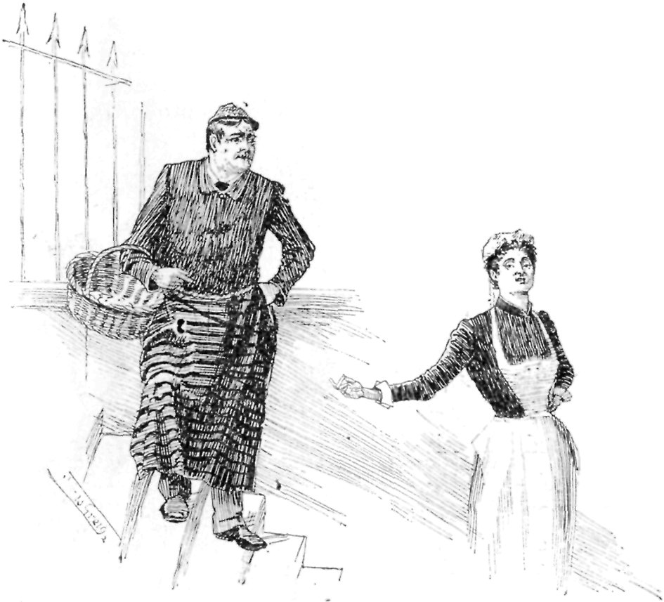
"HER ENGAGEMENT WAS 'OFF.'"
{kind=link}
"I am confident you have done right, Amenda," said Ethelbertha; "you would never have been happy with that man."
"No, mum, I don't think I ever should," replied Amenda. "I don't see how any girl could as hadn't got the digestion of an ostrich."
Ethelbertha looked puzzled. "But what has digestion got to do with it?" she asked.
"A pretty good deal, mum," answered Amenda, "when you're thinking of marrying a man as can't make a sausage fit to eat."
"But, surely," exclaimed Ethelbertha, "you don't mean to say you're breaking off the match because you don't like his sausages!"
"Well, I suppose that's what it comes to," agreed Amenda, unconcernedly.
"What an awful idea!" sighed poor Ethelbertha, after a long pause. "Do you think you ever really loved him?"
"Oh, yes," said Amenda, "I loved him right enough, but it's no good loving a man that wants you to live on sausages that keep you awake all night."
"But does he want you to live on sausages?" persisted Ethelbertha.
"Oh, he doesn't say anything about it," explained Amenda; "but you know what it is, mum, when you marry a pork butcher: you're expected to eat what's left over. That's the mistake my poor cousin Eliza made. She married a muffin man. Of course, what he didn't sell they had to finish up themselves. Why, one winter, when he had a run of bad luck, they lived for two months on nothing but muffins. I never saw a girl so changed in all my life. One has to think of these things, you know."
Later on, she engaged herself to a solicitor's messenger. She did this—as she frankly avowed to Ethelbertha—to assist her family, who were prosecuting some petty law case at the time. He was a smart, steady man, a great favourite with his employers, and, out of kindly feeling towards him, they did the business for Amenda's father, charging only "out-of-pockets."
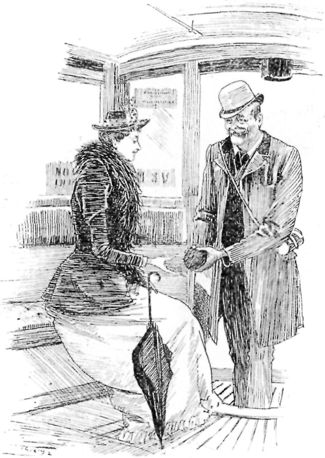
"GAVE HER A COCOANUT."
{kind=link}
Six months after the case was ended, she broke off the match. She said that, on reflection, she could not help seeing what an advantage he would have over her—he being in a solicitor's office, with the law at his fingers' ends—should she ever find it necessary to summons him.
"But, my good girl," said Ethelbertha, quite distressed, "one doesn't marry a man with the idea of subsequently summonsing him!"
"No, mum," said Amenda, "one always hopes one will never need to, I'm sure, but it's just as well to be prepared. I knew a girl, when I was in service at Hastings, that loved a printer, and they were both going to commit suicide because her parents didn't want 'em to marry; and now he costs her four shillings a month regular in summonses. It's no good shutting one's eyes to things, mum."
But the most shamefully mercenary engagement that I think Amenda ever entered into was one with a 'bus conductor. We were living in the North of London then, and she had a young man, a cheesemonger, who kept a shop in Lupus Street, Chelsea. He could not come up to her because of the shop, so once a week she used to go down to him. One did not ride ten miles for a penny in those days, and she found the fare from Holloway to Victoria and back a severe tax upon her purse. The same 'bus that took her down at six brought her back at ten. During the first journey the 'bus conductor stared at Amenda; during the second he talked to her, during the third he gave her a cocoanut, during the fourth he proposed to her, and was promptly accepted. After that, Amenda was enabled to visit her cheesemonger without expense.
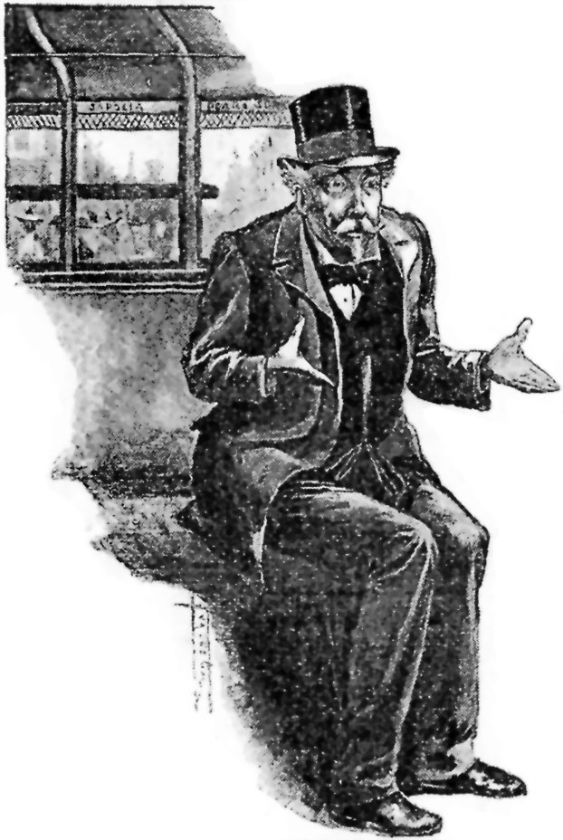
"'I DESIRE SHARING CROSS.'"
{kind=link}
He was a quaint character himself, was this 'bus conductor. I often rode with him to Fleet Street. He knew me quite well (I suppose Amenda must have pointed me out to him), and would always ask me after her—aloud, before all the other passengers, which was trying—and give me messages to take back to her. Where women were concerned he had what is called "a way" with him, and from the extent and variety of his female acquaintance, and the evident tenderness with which the majority of them regarded him, I am inclined to hope that Amenda's desertion of him (which happened contemporaneously with her jilting of the cheesemonger) caused him less prolonged suffering than might otherwise have been the case.
He was a man from whom I derived a good deal of amusement one way and another. Thinking of him brings back to my mind a somewhat odd incident.
One afternoon, I jumped upon his 'bus in the Seven Sisters Road. An elderly Frenchman was the only other occupant of the vehicle. "You vil not forget me," the Frenchman was saying as I entered, "I desire Sharing Cross."
"I won't forget yer," answered the conductor, "you shall 'ave yer Sharing Cross. Don't make a fuss about it."
"That's the third time 'ee's arst me not to forget 'im," he remarked to me in a stentorian aside; "'ee don't giv' yer much chance of doin' it, does 'ee?"
At the corner of the Holloway Road we drew up, and our conductor began to shout after the manner of his species: "Charing Cross—Charing Cross—'ere yer are—Come along, lady—Charing Cross."
The little Frenchman jumped up, and prepared to exit; the conductor pushed him back.
"Sit down and don't be silly," he said; "this ain't Charing Cross."
The Frenchman looked puzzled, but collapsed meekly. We picked up a few passengers, and proceeded on our way. Half a mile up the Liverpool Road a lady stood on the kerb regarding us as we passed with that pathetic mingling of desire and distrust which is the average woman's attitude towards conveyances of all kinds. Our conductor stopped.
"Where d'yer want to go to?" he asked her severely—omnibus conductors have a manner of addressing all pedestrians as though they were lost children or suspicious loiterers—"Strand—Charing Cross?"
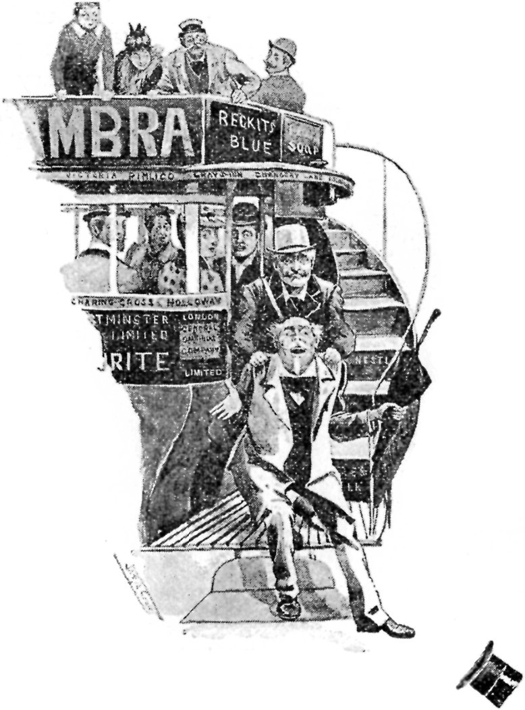
"THE CONDUCTOR COLLARED HIM."
{kind=link}
The Frenchman did not hear or did not understand the first part of the speech, but he caught the words "Charing Cross," and bounced up and out on to the step. The conductor collared him as he was getting off, and jerked him back savagely.
"Carnt yer keep still a minute," he cried indignantly; "blessed if you don't want lookin' after like a bloomin' kid."
"I vont to be put down at Sharing Cross," answered the little Frenchman, humbly.
"You vont to be put down at Sharing Cross," repeated the other bitterly, as he led him back to his seat. "I shall put yer down in the middle of the road if I 'ave much more of yer. You stop there till I come and sling yer out. I ain't likely to let yer go much past yer Sharing Cross, I shall be too jolly glad to get rid o' yer."
The poor Frenchman subsided, and we jolted on. At "The Angel" we, of course, stopped. "Charing Cross," shouted the conductor, and up sprang the Frenchman.
"Oh, my Gawd," said the conductor, taking him by the shoulders and forcing him down into the corner seat, "wot am I to do? Carnt somebody sit on 'im?"
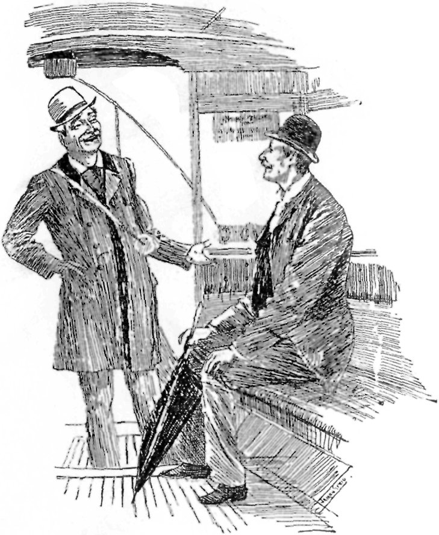
"'BLESSED IF I DIDN'T RUN HIM ON TO VICTORIA.'"
{kind=link}
He held him firmly down until the 'bus started, and then released him. At the top of Chancery Lane the same scene took place, and the poor little Frenchman became exasperated.
"He keep on saying Sharing Cross, Sharing Cross," he exclaimed, turning to the other passengers; "and it is not Sharing Cross. He is fool."
"Carnt yer understand," retorted the conductor, equally indignant; "of course I say Sharing Cross—I mean Charing Cross, but that don't mean that it is Charing Cross. That means that—" and then perceiving from the blank look in the Frenchman's face the utter impossibility of ever making the matter clear to him, he turned to us with an appealing gesture, and asked:
"Does any gentleman know the French for 'bloomin' idiot'?"
A day or two afterwards, I happened to enter his omnibus again.
"Well," I asked him, "did you get your French friend to Charing Cross all right?"
"No, sir," he replied, "you'll 'ardly believe it, but I 'ad a bit of a row with a policeman just before I got to the corner, and it put 'im clean out o' my 'ead. Blessed if I didn't run 'im on to Victoria."